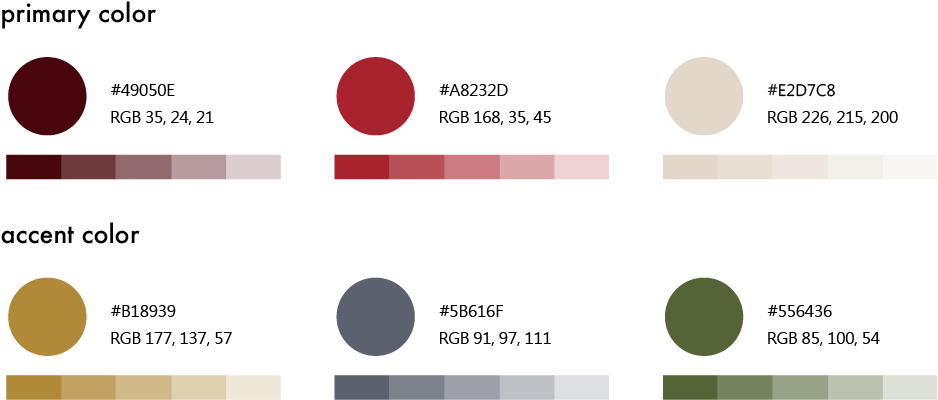
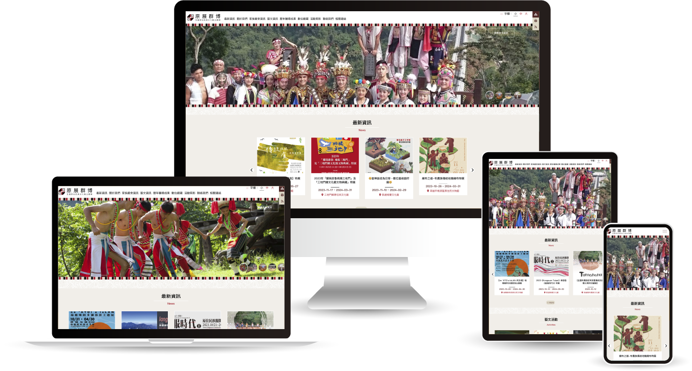
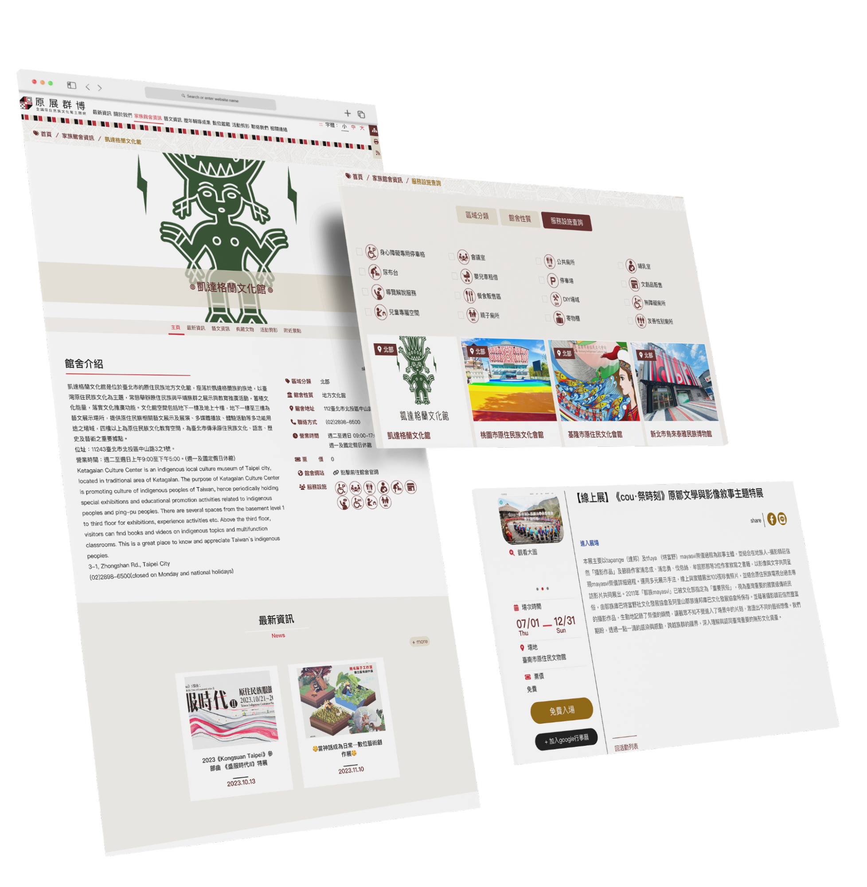
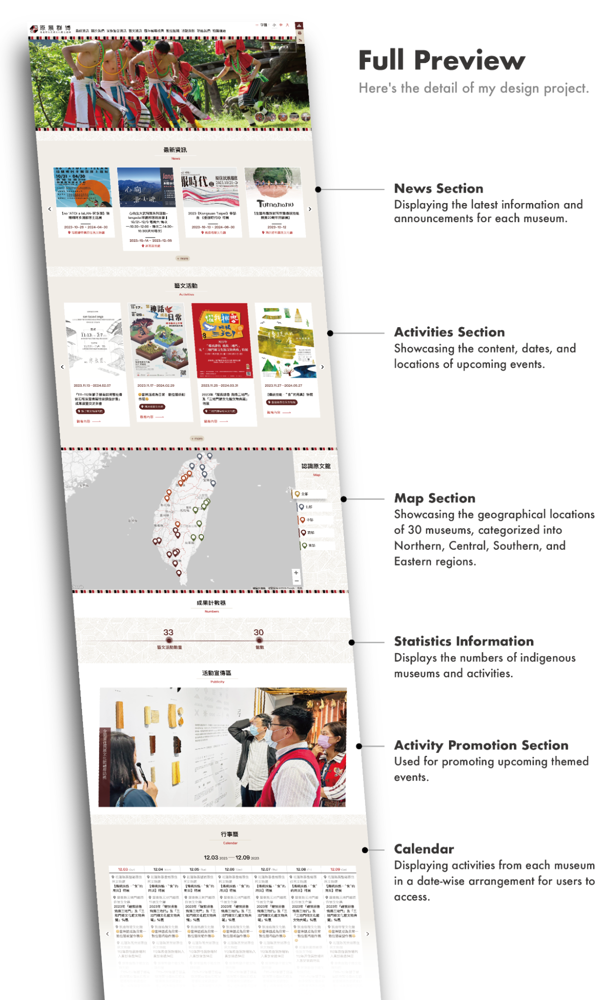
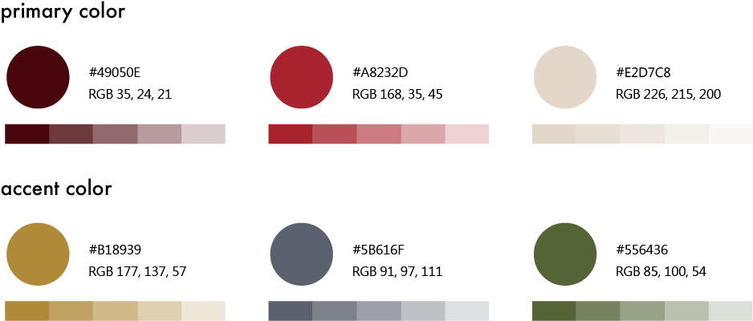
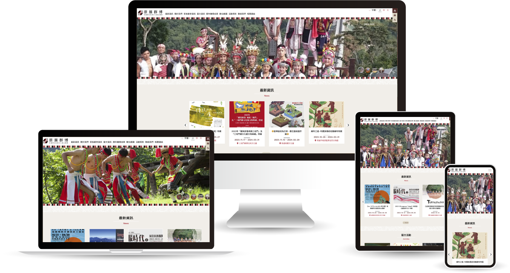
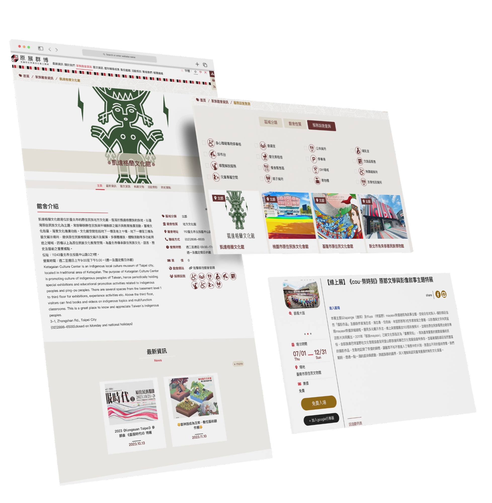
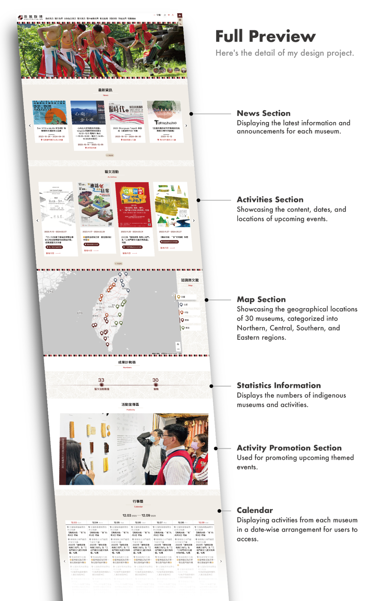

Overview
The Indigenous Peoples Cultural Development Center commissioned our team to create a website for Indigenous Cultural Museums. The website showcases information from 30 Taiwanese indigenous museums and is compliant with Web Content Accessibility Guidelines (WCAG) level AA.
Goals
- Complies with Web Content Accessibility Guidelines (WCAG) level AA.
- Showcases information from 30 indigenous museums in Taiwan.
Background
About Our Client -- Indigenous Peoples Cultural Development Center
The Indigenous Peoples Cultural Development Center, located in Taiwan, is dedicated to the preservation, research and development, academic research and exchange, as well as social and educational activities related to the indigenous cultures of Taiwan.
Design Process
- 01 Investigate: Client Meeting, Competitive Analysis
- 02 Ideate: User Flow, Information Architecture
- 03 Design: Wireframing, Prototype Presentation
- 04 Test: Customer Feedback, Usability Test
- 05 Implement
Investigate - Competitive Analysis
In both of these competing products, it can be observed that they both utilize indigenous totem designs as part of their design style. Additionally, in terms of content presentation, they both employ the use of maps and calendars to enable users to easily access information.

Web Accessibility
Text Colors & Font Sizes
The website's main background and text colors comply with Web Content Accessibility Guidelines (WCAG) level AA, ensuring a contrast ratio of over 4.5:1. Users can also freely adjust the text size from the menu in the top right corner.
The Access Key
The website adheres to accessible design standards by incorporating features like breadcrumbs (:::), a site navigator, and keyboard shortcuts (Access Key) for improved navigation.
The Accesskeys used by this site are designated as follows:
- Alt + U: Upper block, containing the links to the services of this site and search box.
- Alt + C: Main content area shows the content of each page.
- Alt + Z: Bottom Link area.
- Alt + N: Switch font size.
Logo Design
The design uses traditional clothing and common totemic symbols from Taiwan's indigenous culture. The logo's red, black, and white colors are commonly seen in their daily lives.
The Website Design
Visiting Indigenous Cultural Museums Website.
 







Personal Growth
- Learn the production methods and design specifications of accessible web pages and use HTML/CSS to create an accessible website.
- Understand the front-end design process and collaborate with engineers.